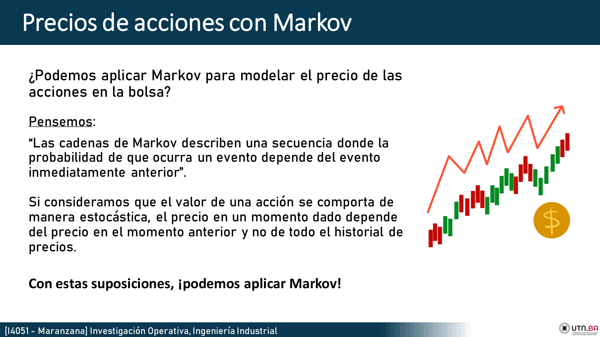
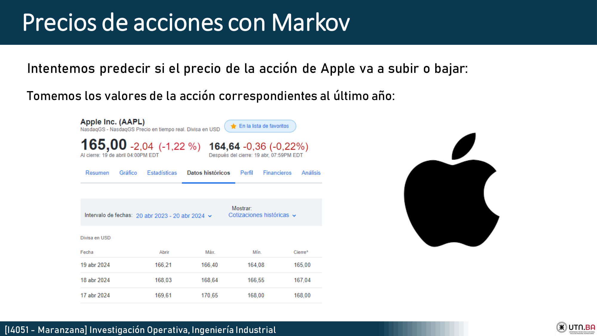
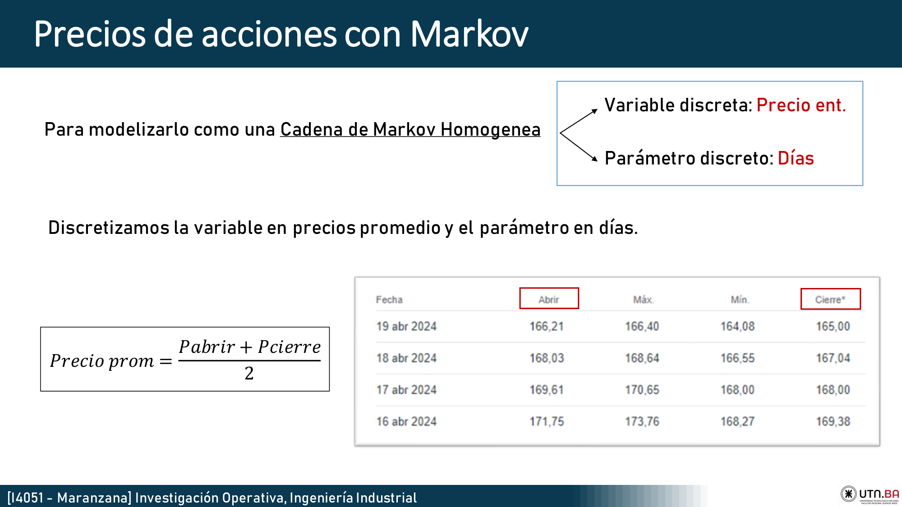
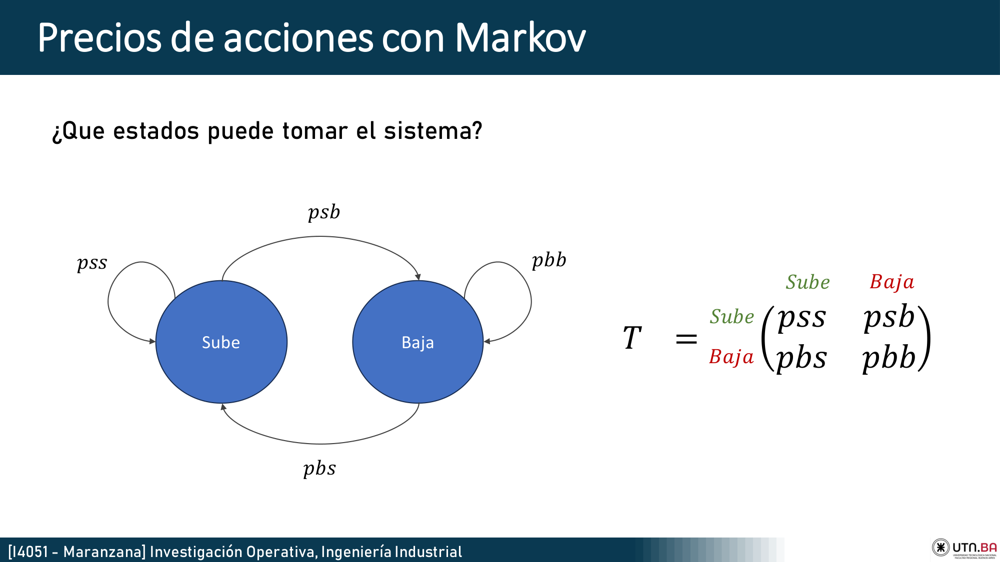
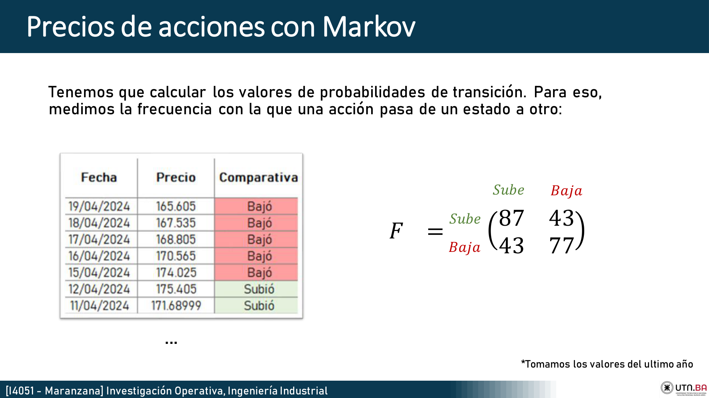
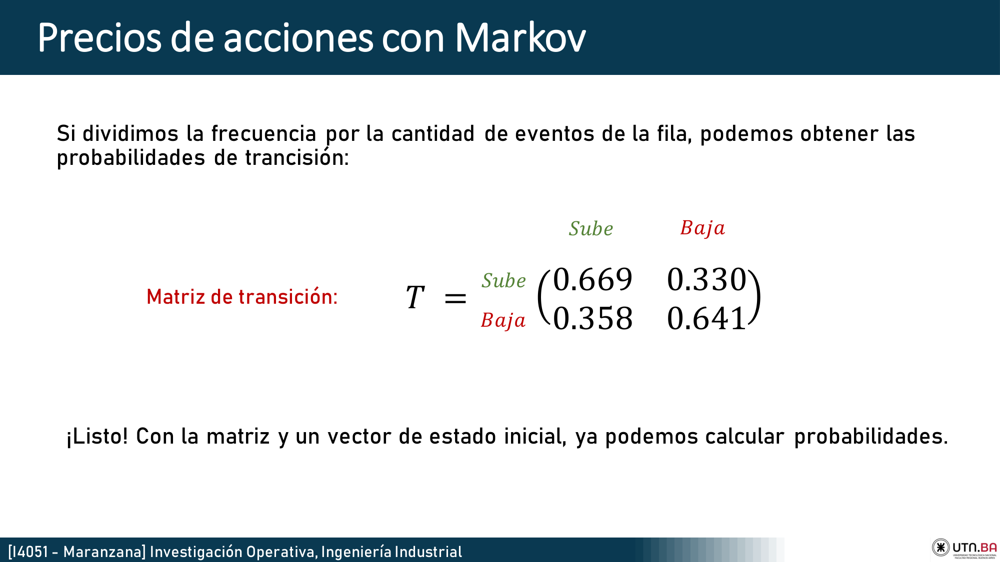

Ingrese un ticket y haga clic en "Simular Proyección" para obtener un recorrido estocástico.
Precios de Acciones con Markov
📄 Ver PDF OriginalInvestigación Operativa, Ingeniería Industrial - Luciano De Doménico
¿Podemos aplicar Markov para modelar el precio de las acciones en la bolsa?
Si consideramos que el valor de una acción se comporta de manera estocástica, el precio en un momento dado depende del precio en el momento anterior y no de todo el historial de precios. Con estas suposiciones, podemos aplicar Markov bajo la métrica del promedio diario:


Estados del Sistema: El Ejemplo de Apple
Discretizando la variable, el sistema toma dos estados principales de transición de un día a otro: Sube o Baja.
Intentemos predecir si el precio de la acción de Apple va a subir o bajar. Tomamos los valores del último año y medimos la frecuencia con la que pasó de un estado a otro en días consecutivos obteniendo:
| 87 | 43 |
| 43 | 77 |


Dividiendo las frecuencias por sus totales de fila, normalizamos y obtenemos la Matriz de Probabilidades de Transición (T):
| 0.669 | 0.330 |
| 0.358 | 0.641 |

Aplicando el Vector de Estado
Con la Matriz Estocástica y un vector inicial, simulamos. Si hoy la acción bajó (Vector: 0 , 1), ¿qué pasará dentro de 2 días? Multiplicamos el vector por T²:
| 0.566 | 0.433 |
| 0.469 | 0.530 |
Conclusión del modelo: De esta forma predictiva concluimos que con un 53% de probabilidad, Apple va a bajar dentro de 2 días, fundamentando nuestras futuras simulaciones locales de precios.

* Esto no es una recomendación de inversión. Las inversiones financieras traen riesgos y este es un modelo de Ingeniería Industrial puramente académico.
Lógica Base de Python (Jupyter Notebook / Pandas)
A continuación se expone la teoría limpia del código de simulación (sin wrappers de red). Esta es la matemática en variables que rige nuestros algoritmos de datos e IO.
1. Ingesta y Discretización (Promedio)
import pandas as pd
import numpy as np
import yfinance as yf
# 1. Carga de datos historicos del ticker
datos_historicos = yf.download("AAPL", start=fecha_inicio, end=pd.Timestamp.today())
# 2. Promedio entre el Precio de Apertura y el de Cierre
datos_historicos["Promedio"] = (datos_historicos["Open"] + datos_historicos["Close"]) / 2
Se importan las bibliotecas de análisis de datos y se crea un vector continuo combinando Apertura y Cierre con la esperanza de mitigar el ruido intradiario.
2. Transición y Frecuencias (Estados de Markov)
# 3. Vectorización de Estados: Subió o Bajó respecto del día anterior (.diff())
datos_historicos["Frecuencia_o"] = np.where(datos_historicos["Promedio"].diff() > 0, "Subió", "Bajó")
# Desplazamos (shift) un registro hacia atrás para contraponer t vs t+1
datos_historicos["Frecuencia_f"] = datos_historicos["Frecuencia_o"].shift(1)
# Cruzamiento Analítico para extraer F
matriz_frecuencias = pd.crosstab(datos_historicos["Frecuencia_f"], datos_historicos["Frecuencia_o"])
Utilizamos pd.crosstab sobre dos vectores de Pandas (el estado actual vs el pasado) lo que instantáneamente genera la matriz empírica F (ej: Las 87 Sube->Sube, y las 43 Baja->Sube).
3. Matriz de Probabilidad Exacta
# 4. Dividir cada Frecuencia sobre las sumas de sus eventos de partida (T)
matriz_probabilidades = matriz_frecuencias.div(matriz_frecuencias.sum(axis=1), axis=0)
4. Fase de Simulación Algorítmica
num_pasos = 100
precio_actual = datos_historicos["Promedio"].iloc[-1]
cambio_estado = "Subió" # Estado final real del último día
for _ in range(num_pasos):
# Aislamos las probabilidades de transición de nuestro estado actual
prob = matriz_probabilidades.loc[cambio_estado]
# 5. La ruleta probabilística usando la Matriz (T)
cambio_estado = np.random.choice(["Subió", "Bajó"], p=[prob['Subió'], prob['Bajó']])
# Determinamos exactamente "Cuánto" basándonos en Desvío Típico e infiriendo Normalidad (Campana Gaussiana)
if cambio_estado == "Subió":
incremental = abs(np.random.normal(media_subida, desvio_subida))
precio_actual = precio_actual + incremental
else:
incremental = abs(np.random.normal(media_bajada, desvio_bajada))
precio_actual = precio_actual - incremental
precios_simulados.append(precio_actual)
Dentro del lazo, la función np.random.choice recibe los pesos de probabilidad exacta de Markov. Luego, el cambio en dólares se infiere de una distribución normal simulada con variables aleatorias. Este recorrido en serie es devuelto finalmente a nuestro tablero para trazarlo hacia el futuro.